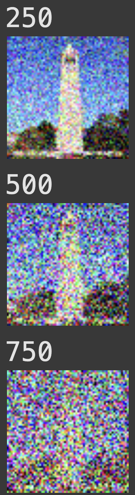
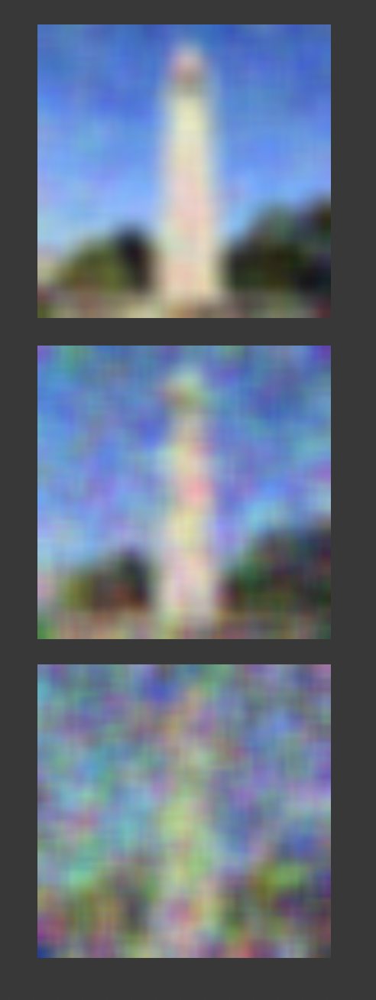

AI art is becoming more and more common among short-form content, music videos, and of course, art. However, many might not understand how exactly these images are created. In this part of the project, I attempt to create different images and even optical illusions.
It's easy to "destroy" a clear image into white noise -- however, it's hard to reconstruct a real image from white noise. A more easy reconstruction process would be to reverse or undo the process of destroying an image, also known as "denoising" an image.
For example, using HuggingFace's diffusion model package, we can create images using the prompts:
These images were created using "inference steps" of 20. This means that the image was denoised 20 times. If we increase the number of denoising steps, we get a more "accurate" image (which looks more realistic and less AI-art looking). The drawback of increasing the denoising steps is that it takes longer.

The same prompts, but with inference steps = 100

The same prompts, but with inference steps = 50 for step1, and inference steps = 20 for step2.
Given this real campanile image:

I perform the forward process, which is given by the equation:
Where alpha represents a cumulative product of the amount of noise is removed each time, and epsilon represents a random value picked within a Normal distribution ~N(0, 1).

I can try to blur the image to denoise it, but that doesn't work well. The best kernel size I found was k=7:
